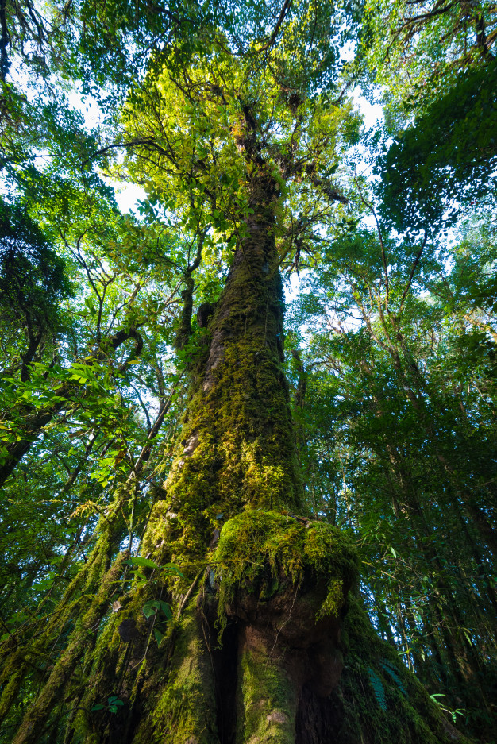

Le foreste nebbiose
Una foresta nebulosa è una foresta umida sempreverde tropicale o subtropicale, caratterizzata dall'essere coperta, in modo persistente, frequente o stagionale, da una cortina di nuvole a bassa quota, in genere a livello della chioma arborea. Le foreste nebulose sono spesso caratterizzate da un'abbondanza di briofite che ricoprono terreno e vegetazione, questo avviene specialmente nelle selle delle montagne, dove l'umidità depositata dalle nuvole è conservata più efficacemente. La definizione di foresta nebulosa è ambigua: molti paesi non adottano questo termine, preferendo denominare questi ambienti come foresta afromontana, foresta pluviale montana superiore o usando termini più specifici come yungas in Bolivia e laurisilva nelle isole atlantiche Occasionalmente, invece, si considerano foreste nebulose anche foreste subtropicali e addirittura temperate.


A confronto con le foreste umide tropicali presenti a quote più basse, le foreste nebulose hanno alberi di altezza minore, combinata con una maggiore densità del fusto, spesso con tronchi e rami annodati a formare corone dense e compatte. Le foglie divengono più piccole, spesse e dure all'aumentare della quota. Queste foreste mostrano in generale una minore varietà di piante lignee, ma l'elevata umidità promuove lo sviluppo di una grande biomassa e biodiversità di piante epifite, in particolare briofite, licheni, pteridofite (incluse hymenophyllaceae), bromeliaceae e orchidee. Il numero di piante endemiche può essere molto elevato.